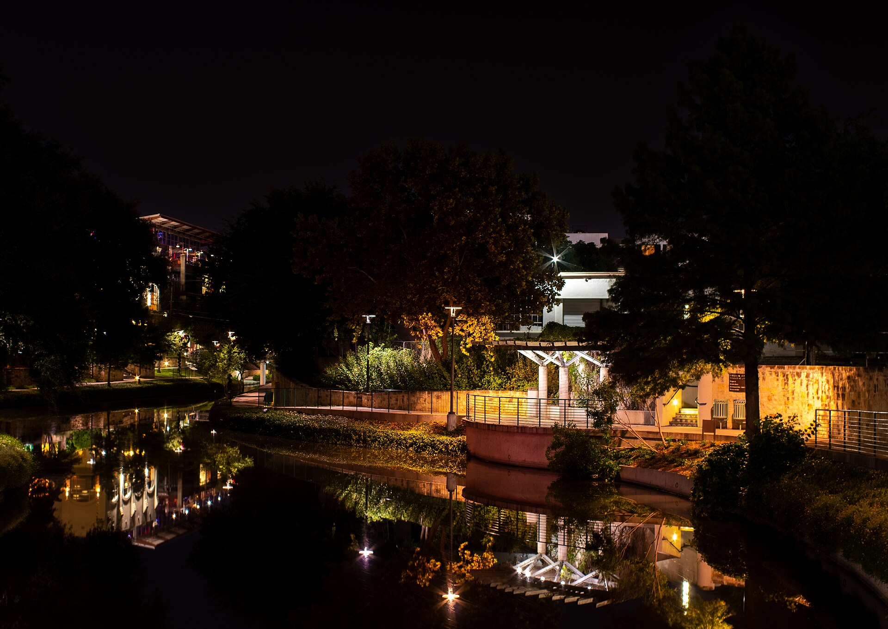
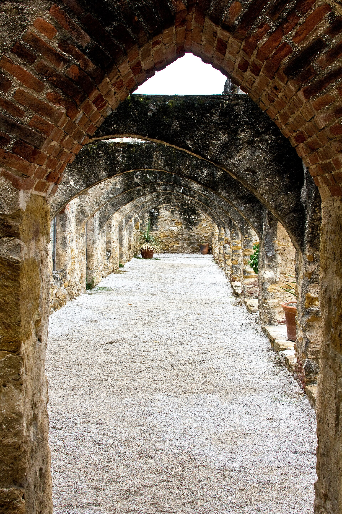
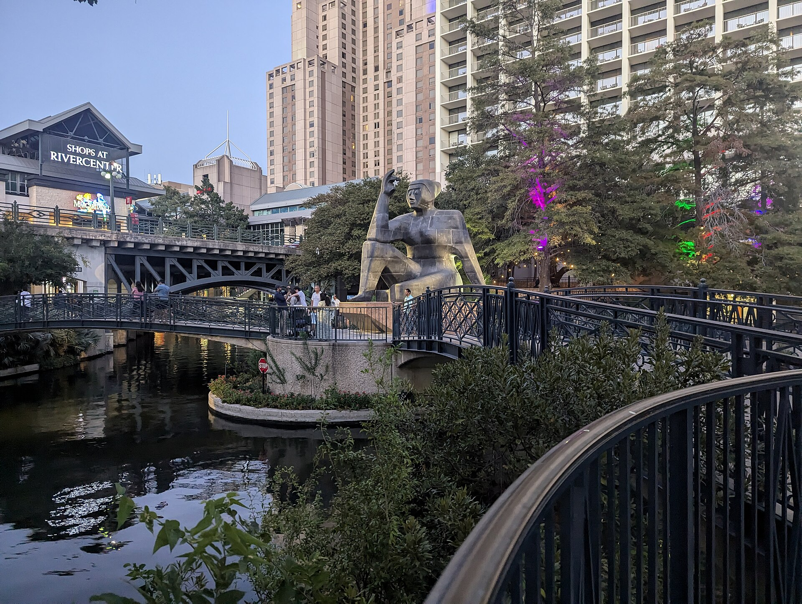

Remodeling and handyman work across San Antonio, Texas - family owned and operated.
Ask for a quoteRemodeling and handyman work across San Antonio, Texas - family owned and operated.
Ask for a quote
JJ’s Remodeling Services is a family-run remodeling contractor in San Antonio, Texas - bathrooms, floors, painting, roofing and fences, and the small jobs between them.
The company. JJ’s Remodeling Services is family owned and operated, working out of San Antonio and Live Oak, Texas. Its own words to neighbours: “No job is too big or too small.”
The work. Remodeling first - one Nextdoor neighbour hired JJ’s for a full bathroom demo and remodel, a wood fence, and floors for an entire home - then painting, drywall, tile, doors, windows and roofing.
The patch. San Antonio and the towns around Bexar County - Live Oak, La Vernia and Geronimo among them.
The phone. Call or text (830) 624-3795, or write to jjhandymanservice210@gmail.com. Describe the room, the floor or the fence, and ask for a quote.


San Antonio, where JJ’s works. All photographs via Wikimedia Commons, credited below.
Tell JJ’s what the house needs, and ask for a quote.